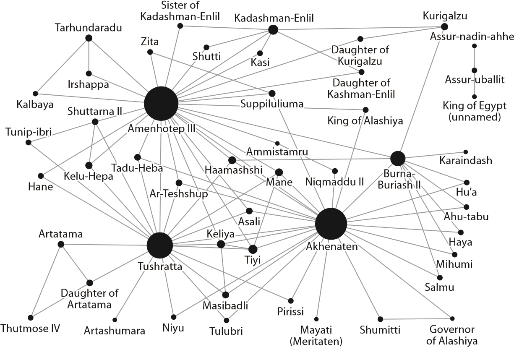
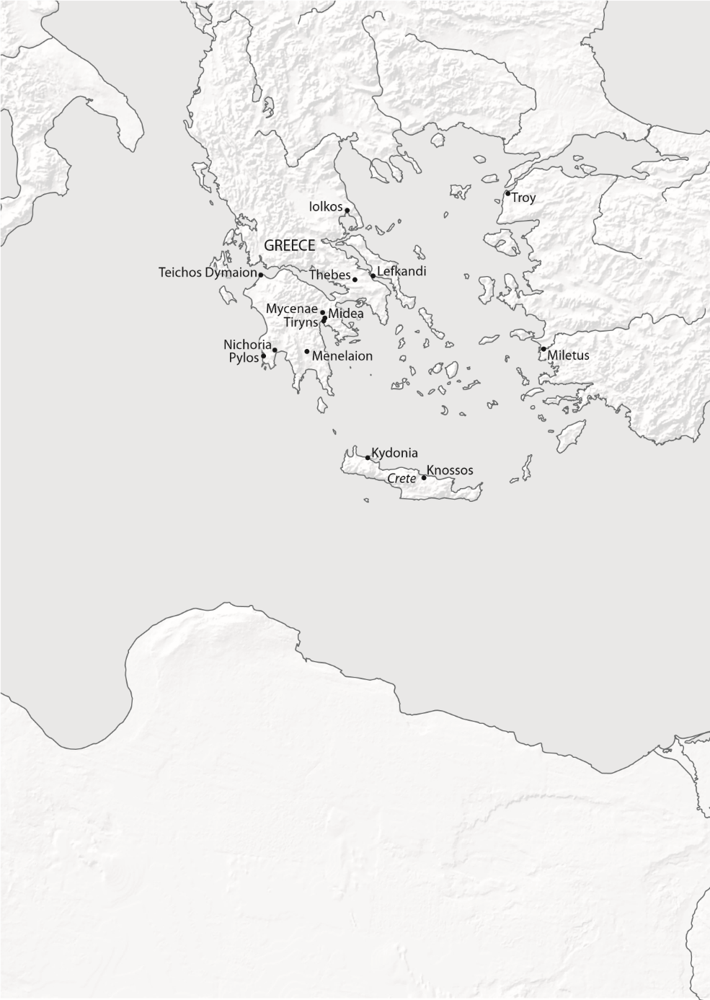
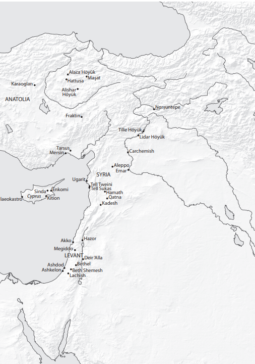
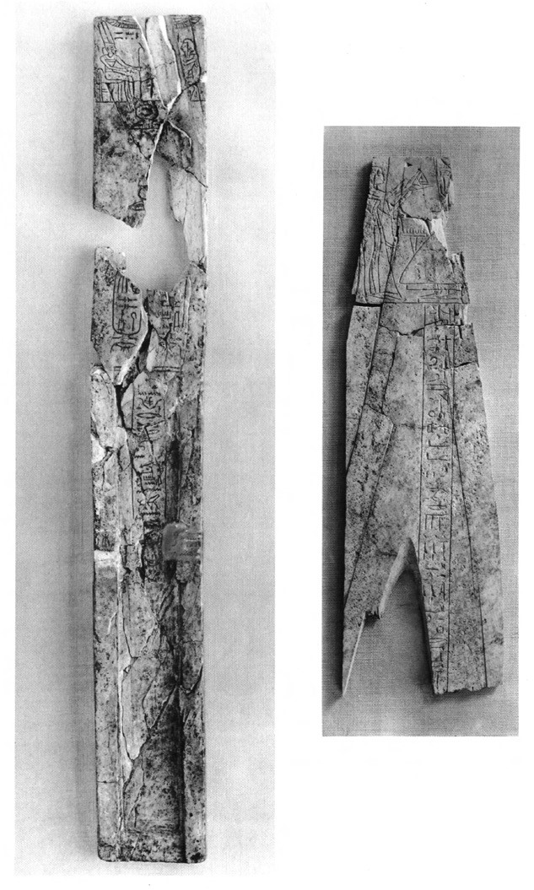

CHAPTER FOUR
This is the moment for which we have been waiting: the climax of the play and the dramatic beginning of the end to three hundred and more years of the globalized economy that had been the hallmark of the Late Bronze Age in the Aegean and Eastern Mediterranean. The twelfth century BC, as we will see in this final act, is marked more by tales of woe and destruction than by stories of trade and international relations, although we can begin on the high note of the latter.
Chance is said to favor the prepared spirit, but in some cases even the unprepared spirit is so favored. For it was an accidental discovery by a peasant, presumably untutored in the ways of archaeology, that led to the discovery of the city and kingdom of Ugarit, located on the coast of north Syria. In 1929, the reported finding of a tomb at Minet el-Beida Bay brought French archaeologists to the area. Excavations quickly revealed the ruins of a port city, now referred to simply as Minet el-Beida. Eight hundred meters farther inland, within a modern mound called Ras Shamra, the capital city of Ugarit was brought to light soon afterward.[224]
Both Ugarit and Minet el-Beida have been under almost continuous French excavation ever since, first by Claude Schaeffer from 1929 onward and then from 1978 to 1998 by Marguerite Yon. Since 1999, a joint Franco-Syrian team has conducted the excavations. These, all together, have revealed the remnants of a functioning, busy, and prosperous commercial city and port, which were suddenly destroyed and abandoned soon after the beginning of the twelfth century BC. Within the ruins, products from all over the Eastern Mediterranean and Aegean have been found; a warehouse in Minet el-Beida, for example, still held eighty Canaanite storage jars. Unfortunately, these were found in the 1930s, so rigorous scientific analyses of the contents were not conducted.[225]
Within the private houses and the royal palace at Ugarit, a number of important archives have been recovered since the 1950s, documenting the economic activities of several merchants, as well as of Ugarit’s royal family. The letters and other items in these archives were written on clay tablets, as was usual in the Bronze Age, but in this case tablets were found inscribed with different languages: sometimes Akkadian, sometimes Hittite, sometimes Egyptian, and sometimes other less widely used languages, such as Hurrian.
Additionally, there was one other language that scholars had never previously seen. It was deciphered fairly rapidly and is now called Ugaritic. It used one of the earliest alphabetic scripts yet known— except that there were actually two alphabetic scripts in the texts, one with twenty-two signs like the Phoenician alphabet and the other with an additional eight signs.[226]
These Ugaritic texts, of which there is now such a large corpus that they have spawned a cottage industry of modern scholarship known as Ugaritic studies, include not only the archives and correspondence of the merchants and the king, but also examples of literature, mythology, history, religion, and other elements belonging to a thriving civilization aware of its own legacy. The result is that we can reconstruct the city of Ugarit from its ruins and can reconstitute as well, from its texts, the daily life and belief systems of its inhabitants. For example, it is clear that they worshipped a pantheon of deities, among whom El and Baal figured prominently. And we know the names of their kings, from Ammistamru I and Niqmaddu II, whose letters to Amenhotep III and Akhenaten are in the Amarna archive in Egypt, to the very last king, Ammurapi, who ruled in the first decade of the twelfth century BC. We also know that the kings of Ugarit married princesses from the neighboring polity of Amurru, and probably also from the larger kingdom of the Hittites, in dynastic marriages complete with dowries that were quite literally fit for a king, though at least one of these marriages ended in a bitter divorce that dragged on in the courts for years.[227]
The citizens and kings of Ugarit carried on lively trade relations throughout the lifetime of the city. It was clearly an international entrepôt, with ships from many areas arriving in the harbor of Minet el-Beida. It may have owed allegiance to Egypt during the first half of the fourteenth century BC, but was definitely a vassal of the Hittites from the second half of that century onward, after Suppiluliuma conquered the area, ca. 1350– 1340 BC. Texts at the site, found in the various archives, most of which date to the last half century of the city’s existence, document connections between Ugarit and numerous other polities both large and small, including Egypt, Cyprus, Assyria, the Hittites, Carchemish, Tyre, Beirut, Amurru, and Mari. Most recently, the Aegean has been added to this list as well.[228]
The tablets also specifically mention the exportation from Ugarit of perishable goods, including dyed wool, linen garments, oil, lead, copper, and bronze objects, especially to the Assyrians, located far to the east in Mesopotamia, as well as extensive trade connections with Beirut, Tyre, and Sidon on the Levantine coast. Objects imported from the Aegean, Egypt, Cyprus, and Mesopotamia have been found at Ugarit itself, including Mycenaean vessels, a bronze sword inscribed with the name of the Egyptian pharaoh Merneptah, hundreds of fragments of alabaster jars, and other luxury items. These, and other more mundane goods, such as wine, olive oil, and wheat, reached Ugarit through the efforts of merchants like Sinaranu, whom we met earlier in these pages, whose ship went to Crete and back during the mid-fourteenth century BC. We know that the Ugaritians were sufficiently well-off financially to send the Hittites tribute each year, consisting of five hundred shekels of gold, dyed wool, and garments, in addition to gold and silver cups for the Hittite king, queen, and high officials.[229]
We now know of other Ugaritic merchants who were active later—at the time of the destruction of Ugarit at the beginning of the twelfth century— thanks to additional tablets, many of which have been found in recent decades within their houses, and some of which have changed our understanding of the city’s probable end.[230] One such house is known as the “House of Yabninu,” located near the southern part of the royal palace. The house itself has still not been completely excavated, but is already known to have covered at least one thousand square meters, so Yabninu must have been a reasonably successful merchant. The sixty or more tablets that were discovered within the ruins of this house are thought to have originally been kept on the second floor, and include documents written in Akkadian, Ugaritic, and the as-yet-undeciphered language known as Cypro-Minoan, chiefly used on the island of Cyprus but also found inscribed on vessels at Tiryns on the Greek mainland. The texts written on the tablets, as well as the imported objects found within the house, document that Yabninu’s mercantile activities included connections with Cyprus, the Levantine coast farther to the south, Egypt, and the Aegean.[231]
Another set of tablets was found within the so-called House of Rapanu, which was excavated in 1956 and 1958. The tablets, more than two hundred of them, were quickly studied and then published a de cade later, in 1968. They indicate that Rapanu was a scribe and high-ranking adviser to the kings of Ugarit, from Ammistamru II onward. Rapanu was apparently involved in some sensitive negotiations at the highest levels, as the contents of the archive indicate. The texts include a number of letters exchanged between the king of Ugarit and the king of Cyprus (Alashiya), written at a time when invaders threatened both. There are also letters exchanged with the king of nearby Carchemish and with the more-distant Egyptian pharaoh; the latter set are concerned with some sort of incident involving Canaanites on the Levantine coast.[232]
One of the letters deals with trade in oil between Ugarit and Cyprus. It is from Niqmaddu III, the penultimate king of Ugarit, and was sent to the king of Alashiya, whom he calls his «father,” referring to himself as “your son.”[233] Unless the Ugaritic king had married a Cypriot princess, which is not out of the question, it seems that the use of the word «father” follows the general terminology of the time in attempting to establish a familial relationship, while at the same time acknowledging either the superiority or the relative age of the king of Cyprus over the king of Ugarit. Another of the letters in this house has already been mentioned: the one describing the coming of enemy ships to Ugarit, which Schaeffer thought had been found in a kiln, being baked before its dispatch to the king of Cyprus. We will discuss this text further below.
Some of the most recently discovered tablets are those in the so-called House of Urtenu. This residence was initially uncovered by accident in the southern part of the site during the construction of a modern military bunker in 1973. The archaeologists were allowed to dig through the spoil heap created by the digging of the bunker, which incidentally destroyed the center of the house. They found a number of inscribed clay tablets, all of which have been published. Additional tablets were subsequently found during excavations from 1986–1992 and 1994–2002. Many of these have now also been published, including a number in 2016, after the first edition of this book appeared (they have been considered and included in the updated discussions below).

Fig. 9. Royal letters in Urtenu’s archive at Ugarit (illustrative rather than exhaustive; nodes = individuals sending or receiving letter(s); edges/lines = pairs between whom letter(s) sent; size of circles = number of letters; created by D. H. Cline).
Overall, there are more than 500 tablets in this archive—134 were found in 1994 alone— with some texts written in Ugaritic but the majority in Akkadian. The correspondence includes letters from the kings of Egypt, Cyprus, Hatti, Assyria, Carchemish, Sidon, Beirut, and possibly Tyre.[234] One of the oldest was apparently sent by a king of Assyria, probably Tukulti-Ninurta I, to a king of Ugarit, perhaps Ammistamru II or Ibirana, and concerns the battle in which Tukulti-Ninurta and the Assyrians defeated
As one of the excavators has pointed out, the tablets indicate that Urtenu was active at the beginning of the twelfth century BC, and that he had a high social status. He was apparently an agent in a large commercial firm run by the queen’s son-in-law, which had commercial dealings with the city of Emar in inland Syria, as well as with nearby Carchemish. He was also involved in negotiations and trade deals with the island of Cyprus, among other long-distance trade ventures.[236] In fact, the five letters found in the house that were sent from Cyprus are extremely important, for they include— for the first time ever— the name of a king of Bronze Age Cyprus: a man known as Kushmeshusha. There are two letters from this king, as well as two letters from senior governors of the island and, intriguingly, a letter from an Ugaritic scribe who was actually living in Cyprus at the time. These five letters now join the other four from Alashiya that had previously been found in Rapanu’s house. In one of the letters that has now been published, Kushmeshusha informed Niqmaddu, the king of Ugarit, that he was sending him thirty-three ingots of copper, which, in modern terms, weighed close to a ton.[237]
There are two additional letters in the house that contain references to two “Hiyawa-men,” who were reportedly waiting in the Lukka lands (later known as Lycia), in southwestern Anatolia, for a ship to arrive from Ugarit. The letters were sent to Ammurapi, the last king of Ugarit, by a Hittite king, probably to be identified as Suppiluliuma II, and one of his top officials. These are the first known references to Aegean people in the Ugarit archives, for “Hiyawa” is undoubtedly related to the Hittite word “Ahhiyawa,” which, as we have seen, is taken by most scholars to mean the Mycenaeans and the Bronze Age Aegean.[238]
There is also a letter from Pharaoh Merneptah of Egypt, responding to a request from the king of Ugarit— either Niqmaddu III or Ammurapi— for a sculptor to be sent, so that a statue of the pharaoh could be created and set up in the city, specifically in front of a temple to Baal. Although the pharaoh refused to send the sculptor, he did send a large load of luxury goods, including more than a hundred textiles and pieces of clothing, plus assorted other goods such as ebony wood and plaques of red, white, and blue stones.[239] It is important to note that almost all of these goods are perishable and will not have survived in the archaeological record. It is a good thing that they are mentioned in this text, therefore; other wise we might never have known that they once existed and were exchanged between Egypt and Ugarit.
Another letter in this archive is from a messenger/representative named Zu-Aštarti, discussing the ship on which he had sailed from Ugarit. He states that he was detained en route. Some scholars have wondered whether he had perhaps even been kidnapped, but he writes only: “On the sixth day I was at sea. As a wind took me, I reached the territory of Sidon. From Sidon to the territory of Ušnatu it bore me, and in Ušnatu I am held up. May my brother know this... Say to the king: ‘If they have received the horses which the king gave to the messenger of the land of Alashiya, then a colleague of the messenger will come to you. May they give those horses into his hand.’”[240] It is not completely clear why he was “held up” in Ušnatu or even why the letter is in Urtenu’s archives, though it is possible that horse trading was a state-protected industry in Ugarit at that time. A contemporary letter from the Hittite king Tudhaliya IV to Ammistamru II, found in Rapanu’s house, states that the Ugaritic king must not allow horses to be exported to Egypt by Hittite or Egyptian messengers/ merchants.[241]

Fig. 10. Sites destroyed or affected ca. 1200 BC.

The textual evidence from the various archives and houses at Ugarit indicate that international trade and contact was going strong in the city right up until the last possible moment. In fact, one of the scholars publishing the letters from the House of Urtenu noted almost twenty years ago that there was very little indication of trou ble, apart from the mention of enemy ships in one letter, and that the trade routes seemed to be open right up until the end.[242] The same was true in Emar, on the Euphrates River far to the east in inland Syria, where it has been noted that “the scribes were conducting normal business until the end.”[243]
However, Ugarit was destroyed, apparently quite violently, during the reign of King Ammurapi, most likely between 1190 and 1185 BC. It was not reoccupied until the Persian period, approximately 650 years later. The excavators report “evidence of destruction and fire throughout the city,” including “collapsed walls, burnt pisé plaster, and heaps of ashes,” with a destruction level that reached two meters high in places. Marguerite Yon says that the ceilings and terraces in the residential quarters were found collapsed, and that elsewhere the walls were “reduced to a shapeless heap of rubble.” She believes that the destruction was caused by enemy attack rather than an earthquake, as had previously been suggested by Schaeffer, and that there was violent fighting in the city, including street fighting. This, she says, is indicated by “the presence of numerous arrowheads dispersed throughout the destroyed or abandoned ruins,” as well as the fact that the inhabitants— eight thousand, more or less— fled in haste and did not return, not even to collect the hoards of valuables that some had buried before leaving.[244]
The exact date when all of this transpired has been the focus of recent debate. The most conclusive evidence is a letter found in 1986 within the House of Urtenu. The letter was sent to King Ammurapi of Ugarit by an Egyptian chancellor named Bey who, we know from Egyptian sources, was executed in the fifth year of Pharaoh Siptah. Siptah was the penultimate pharaoh of the Nineteenth Dynasty in Egypt, who ruled ca. 1195–1189 BC, that is, just a few years before Ramses III of the Twentieth Dynasty. The letter can therefore be dated with some certainty, specifically before Bey was executed in 1191 BC, which means that the destruction of the city cannot have taken place before this date. Thus, the destruction of the city is usually dated to 1190–1185 BC, though technically it could have been even later.[245] Some have argued that this date can now be corroborated, on the basis of an astronomical observation found on another tablet at Ugarit. This documents an eclipse of the sun that can be dated to January 21, 1192 BC, which also means that the city cannot have been destroyed before this date.[246]
Contrary to previous popular accounts concerning the end of Ugarit,[247] we probably cannot use the famous letter from the Southern Archive, found in Court V of the palace at Ugarit, either to date the destruction or to identify the destroyers. This was the letter that Schaeffer thought had been found in a kiln, before its dispatch to the king of Cyprus. It begins: “My father, now the ships of the enemy have come. They have been setting fire to my cities and have done harm to the land.” According to the original report, it was found in a kiln, along with more than seventy other tablets, where it had been placed for baking. The excavators and other scholars initially hypothesized that the enemy ships had returned and sacked the city before the urgent request for assistance could be dispatched, and this is the story that has been repeated over and over in scholarly and popular accounts from the past several decades. However, a recent reexamination of the find-spot by additional researchers now indicates that it was not found in a kiln after all, but rather was probably stored within a basket that had fallen from the second floor after the building was abandoned.[248]
As a result, although the letter can be used to discuss the presence of enemy ships and probably invaders, it is not clear whether it dates to the final days of Ugarit or to some slightly earlier period. And even if it is a reference to ships of the Sea Peoples, it is possible that it dates to the first wave of invaders, those who attacked Egypt in 1207 BC, rather than to the second wave who fought against Ramses III in 1177 BC.
The site of Emar in inland Syria, with which Ugarit was in contact, was also destroyed at approximately the same time, in 1185 BC, as we know from the date given on a legal document found there. However, it is not clear who caused the destruction at Emar. Tablets found there refer to unnamed “hordes” but do not point specifically to the Sea Peoples, as various scholars have noted.[249]
The site of Ras Bassit, located on the northern border of Ugarit, may have also been destroyed at approximately this same time. The excavators believe it was an outpost of Ugarit and state that by approximately 1200 BC it was “partly evacuated, partly abandoned, then set on fire, just like the other sites of the region.” They attribute this destruction to the Sea Peoples, but the attribution is not definitive.[250]
A similar situation has been described at Ras Ibn Hani, on the coast just to the south of Ugarit, which is thought to have been a secondary residence of the Ugaritic kings during the thirteenth century. The excavators and others have long envisioned this site as having been evacuated shortly before the destruction of Ugarit and then destroyed by the Sea Peoples. At least part of the site was immediately reoccupied, as was Ras Bassit, and it is on the basis of the pottery found in these reoccupation levels that the destroyers, and reoccupiers, of both sites are identified by the excavators as the Sea Peoples, a matter that we shall also discuss further below. [251]
In fact, one of the recently published letters from the House of Urtenu at Ugarit has now confirmed most, if not all, of their vision. It is an archival copy of a letter sent from Ugarit by Ammurapi, the last king, to the Hittite viceroy at Carchemish. It reads: “To the king, my lord, say, thus Ammurapi, your servant:... I wrote you twice, thrice, news regarding the enemy!... may my lord know that now the enemy forces are stationed at Ra’šu [modern Ras Ibn Hani] and their avant-guard forces were sent to Ugarit. Now may my lord send me forces and chariots to save me and may my lord save me from the forces of this enemy!”[252] Thus, it is clear that Ras Ibn-Hani had indeed fallen to the invaders, and that those invaders were now threatening Ugarit itself. And we know, from the archaeology, that Ugarit fell sometime soon thereafter. Unfortunately, the text doesn’t provide us with the specific identity of the unnamed enemy forces.
Perhaps the best, and certainly the most recent, evidence for widespread destruction at this time has been found at Tell Tweini, the site of the Late Bronze Age harbor town of Gibala within the kingdom of Ugarit, located about thirty kilo meters south of the modern city of Lattakia. Here, the site was abandoned after a “severe destruction” at the end of the Late Bronze Age. According to David Kaniewski and his scientific team, “The destruction layer contains remains of conflicts (bronze arrowheads scattered around the town, fallen walls, burnt houses), ash from the conflagration of houses, and chronologically well-constrained ceramic assemblages fragmented by the collapse of the town.”[253]
By dating this destruction layer using “stratified radiocarbon-based archaeology” and “anchor points in ancient epigraphic-literary sources, Hittite-Levantine-Egyptian kings and astronomical observations,” the excavators say that they have finally been able “to precisely date the Sea People invasion in [the] northern Levant,” and to “offer the first firm chronology for this key period in human society.”[254] The radiocarbon dates from the widespread ash layer (Level 7A) came back from the lab as dating specifically to ca. 1192–1190 BC. However, two well-known scholars, A. Bernard Knapp and Sturt Manning, have taken issue with these radiocarbon dates, calling them “overly precise,” though Kaniewski and his team have responded in turn, defending their dates.[255] Nevertheless, while they may well have dated the destruction of this Late Bronze Age site, the excavators have offered only circumstantial evidence that the destruction was wreaked by the Sea Peoples, as we will discuss below (and as they now admit).
It is also relevant to point out that this date (1192–1190 BC) is fully thirteen to fifteen years before Ramses III met the Sea Peoples in battle in 1177 BC. Even the destructions elsewhere that are dated to 1185 BC are still eight years before the culminating conflict. Perhaps we should be wondering just how long it would have taken such a proposed migratory group to make its way across the Mediterranean, or even just down the coast of the Levant to Egypt. This, though, would obviously depend upon their organizational ability, means of transportation, and ultimate goals, among other factors, and cannot readily be answered.
Finally, we should also consider a site farther to the south, Tell Kazel, which was located in the region of Amurru, and which may have been the site of ancient Ṣumur, the capital city of that kingdom. The site was destroyed at the end of the Late Bronze Age, and the excavators have plausibly hypothesized that the Sea Peoples destroyed it, especially insofar as Ramses III specifically mentions it (that is, Amurru) in his Sea Peoples inscriptions. Yet, in the occupation level just prior to the destruction, the excavators have identified what appears to be locally produced Mycenaean pottery and other indications of new inhabitants from the Aegean and Western Mediterranean.[256]
Thus, Reinhard Jung of the University of Vienna, who has studied this pottery, has hypothesized that “prior to the large Sea Peoples’ destruction, smaller groups of people arrived by ship at Tell Kazel and settled together within the local population.” He sees this as a pattern of small-scale immigration from the Aegean, but with indications that some of the coinvolved had earlier roots in southern continental Italy.[257] If correct, this is an indication of the complexity of the period and of the people potentially involved. It is even possible that destructions caused by the second wave of Sea Peoples, ca. 1177 BC, may have impacted earlier immigrants from the same origins who had already arrived and settled in the Eastern Mediterranean, perhaps during or after the original Sea Peoples incursions in the fifth year of Merneptah, back in 1207 BC.
During this same period, in the twelfth century BC, a number of cities and towns were destroyed in southern Canaan (i.e., what is today southern Syria, Jordan, and Israel).[258] Just as in north Syria, it is not always clear who destroyed them or when exactly they were destroyed.
However, in the destruction level at the small site of Deir ‘Alla in Jordan, which seems to have been destroyed by an earthquake, complete with a victim killed by a falling wall, a vase with the cartouche of the Egyptian queen Twosret was found. She was the widow of Pharaoh Seti II and is known to have ruled from 1187 to 1185 BC. Thus, the destruction can probably be dated to during or shortly after this time. The same holds true for the site of Akko, in what is now modern Israel, where a similar scarab of Twosret was found in the destruction debris.[259]
Other evidence of destruction can be seen at Tell al-Umayri and Tell es-Saidiyeh in Jordan, which both show signs of a probable destruction by earthquake, perhaps the same one that destroyed Deir ‘Alla. Beth Shan, in modern Israel, may also have suffered from the same earthquake, though Yigael Yadin’s excavations uncovered what he thought was a forceful, i.e., human, end to the Egyptian presence at the site.[260]
Most recently, excavations at the site of Azekah, in the Elah Valley, have uncovered evidence for a violent destruction of the city ca. 1130 BC. Here the remains of four inhabitants and more than one hundred complete vessels were found within a building whose destruction “was severe and complete.” However, it is not yet clear whether the devastation was caused “by an unknown aggressor or... a natural disaster,” as the excavators have put it.[261]
Perhaps the best known among the sites in this area with evidence of destruction are Megiddo and Lachish. However, the nature and timing of the destructions and collapse at these two sites are still very much debated.
At Megiddo in the Jezreel Valley of modern-day Israel, the site of biblical Armageddon, some twenty cities have been found layered one on top of another. Of these, the seventh city, with two phases labeled VIIB and VIIA, was violently destroyed, either twice in the thirteenth and/or twelfth centuries BC, or perhaps simply in a single destruction in the twelfth century.
Traditionally, ever since the University of Chicago excavators published the findings from their excavations at the site during the years 1925–39, it has been accepted that Stratum VIIB ended sometime between 1250 and 1200 BC, while the succeeding city of Stratum VIIA ended sometime around 1130 BC. In these strata were found the remains of a Canaanite palace, or perhaps the remains of two palaces, one built upon the ruins of the other.
According to the Chicago excavators, the Stratum VIIB palace “suffered violent destruction so extensive that the Stratum VIIA builders deemed it more expedient to level off the resulting debris and build over it than to remove it all as was the procedure in previous rebuilding undertakings.” The rooms «were filled with fallen stone to a height of about a meter and a half... charred horizontal lines found here and there on the walls of the rooms to the north of the court... supply a general floor level throughout the palace.”[262] The Stratum VIIA palace, built directly on top, was then thought to have lasted until about 1130 BC.

Fig. 11. Ramses III ivory pen case from Megiddo (after Loud 1939, pl. 62; courtesy of the Oriental Institute of the University of Chicago).
However, David Ussishkin, a Tel Aviv University archaeologist and the recently retired codirector of the Megiddo Expedition, suggested that the Chicago excavators had misinterpreted the levels. Rather than two palaces, one atop the other, he believes we should understand this structure as a single two-story palace, renovated slightly during the transition from VIIB to VIIA, about 1200 BC. There was only a single destruction, he says— a great fire that destroyed the palace at the end of Stratum VIIA. According to Ussishkin, what the Chicago archaeologists thought was the “VIIB palace” was simply the basement or lower story of the palace, while the “VIIA palace” was the upper story. The main city temple (the so-called Tower temple) was also destroyed at this time, but the most recent excavations at the site indicate that much of the rest of the city survived; it appears that only the elite areas were torched at this time.[263]
This Stratum VIIA destruction is often dated to ca. 1130 BC, based upon two objects inscribed with Egyptian cartouches found associated with the debris. The first is an ivory pen case inscribed with the name of Ramses III, which was found among other ivory treasures within a room in the palace, in a context sealed by debris from the destruction of the palace. This would imply that the destruction had taken place sometime during or after the time of Ramses III, about 1177 BC or thereafter.[264]
The ivory pieces found in this room within the palace are among the best-known objects recovered from the site of Megiddo. They include fragmentary boxes and bowls, plaques, spoons, disks, game boards and game pieces, jar lids, and combs, among numerous other items. They are on display at the Oriental Institute at the University of Chicago and the Rockefeller Museum in Jerusalem. It is unclear why these ivory pieces were originally collected together, and why they were in this particular part of the palace. Nevertheless, they have received a great deal of attention over the years, for the ivories themselves and the scenes inscribed upon them exhibit a truly globalized style, now commonly called the International Style, which is also seen elsewhere at sites like Ugarit and Mycenae. The distinctive style combines elements found in Mycenaean, Canaanite, and Egyptian cultures, thereby creating hybrid objects unique to, and typifying, this cosmopolitan age.[265]
The second object of relevance from Megiddo is a bronze statue base inscribed with the name of Pharaoh Ramses VI, who ruled a few decades later, ca. 1141–1133 BC. This was not found in a secure archaeological context, but rather was found beneath a Stratum VIIB wall in the residential area at the site. As Ussishkin notes, this is not a reliable context, since Stratum VIIB was much earlier in time than Ramses VI. This means that the statue base must have been deliberately buried in a hole dug by a later inhabitant, either during the VIIA period or even during the following Iron Age VIB– A city. The base is usually attributed to Stratum VIIA by archaeologists, but this is merely a guess.[266]
These two objects, of Ramses III and VI, are always discussed together in relevant publications, and thus the destruction of Megiddo VIIA is dated after the reign of Ramses VI, or about 1130 BC. However, since the bronze statue base of Ramses VI is not found in a good context, it should not be used to date the ending of Megiddo VIIA. On the other hand, the ivory pen case of Ramses III was indeed sealed within the destruction layer of VIIA and therefore can confidently be used to provide a limiting date before which the city could not have been destroyed, that is, before the reign of this pharaoh. This would indeed fit well with evidence of destruction at several other sites throughout the Near East discussed in these pages.[267]
However, archaeology is a continuously evolving field with new data and new analyses requiring the rethinking of old concepts. Ongoing studies involving radiocarbon dating of remains found within the destruction of VIIA initially indicated that a date of 1130 BC, or possibly even later, is likely to be correct after all. If this proves to be accurate, it would mean that Megiddo was destroyed more than forty years after the Sea People came through the region in 1177 BC. On the other hand, Mario Martin, currently one of the codirectors of the ongoing Tel Aviv Megiddo Expedition, has recently rejected Ussishkin’s suggestion and proposed a different scenario. He suggests that there were two different destructions of the palace after all, just as the original Chicago excavators believed. Martin dates the destruction of the VIIB phase of the palace to the early twelfth century BC, ca. 1177 BC, which is in line with the destructions at other Canaanite sites. He then dates the final destruction of the VIIA phase of the palace, and the entire city, to a few decades later: ca. 1130 BC.[268]
In any event, as Ussishkin has noted, “Lack of written sources leaves [open] the questions of who was responsible for the destruction of Stratum VIIA... the city may have been successfully attacked by invading Sea People groups, by Levantine Canaanite elements, by the Israelites, or by a force combined from different groups.” [269] In other words, at Megiddo, we have the same situation as seen at the relevant level at Hazor, described above, where the elite parts of the city were destroyed, but those responsible for the destruction cannot be identified.
Lachish, another site in modern Israel, also suffered two destructions during this approximate time period, if David Ussishkin, who excavated at the site from 1973 to 1994, is correct. here, at this multilayered site located south of Jerusalem, the seventh and sixth cities (Strata VII and VI) are identified as the last Canaanite cities, based on the material remains found during the excavations. This was a time of great prosperity for Lachish, during the period of Egyptian control of the region. It was one of the largest cities in all of Canaan at that time, with some six thousand people living in its territory, and large temples and public buildings within the city itself.[270]
The Stratum VII city is thought to have been destroyed by fire in about 1200 BC, but the excavators have not speculated as to the nature of the destruction or who might have been responsible. In part, this is because it is unclear how much of the city was actually destroyed. At the moment, evidence for a fiery destruction has been found in only the remains of one temple (the so-called Fosse III Temple) and the domestic quarter in Area S.[271] It is conceivable that the destruction could have been caused by the first wave of Sea Peoples, who came through the region in approximately 1207 BC, but there is no proof for such an attribution.
The Stratum VI city has been the major focus of scholarly attention to date. It appears that the survivors of the Stratum VII conflagration simply rebuilt all or part of the city and continued the same material culture that had existed previously. The Stratum VI city is thought to have been an even richer and more prosperous city than the one that had just been destroyed, with a large public building (the Pillared Building) constructed in Area swhere domestic structures had previously stood. A new temple was also built, in Area P, but little remains of it because of the destruction that it subsequently suffered. Imported objects from Egypt, Cyprus, and the Aegean, primarily pottery vessels, were found throughout the city in this level, attesting to its international connections.[272]
It is thought that there was an influx of poor refugees into the Stratum VI city just before large portions of it were violently destroyed. One structure in particular, the Pillared Building in Area S, “was destroyed suddenly and violently; ash layers and fallen mudbricks covered the whole structure, and several skeletons of adults, children and babies were found trapped under the collapsed wall.” Other buildings at Lachish were also destroyed at this time, after which there ensued a period of abandonment lasting up to three hundred years. According to Ussishkin: “The Level VI city was razed in a violent, fiery destruction, traces of which were detected at every point at which remains of Level VI were uncovered... The destruction was complete, the population liquidated or driven out.”[273]
Earlier archaeologists thought that the city had been destroyed in the late thirteenth century BC, ca. 1230 BC (with the Stratum VII city devastated even earlier), but the date of the destruction of Stratum VI has now been changed significantly by Ussishkin, primarily based on the discovery of a bronze plaque, possibly part of a door bolt, with the cartouche of Ramses III. This plaque was part of a cache of broken or defective bronze objects lying buried and sealed beneath the destruction debris of the Stratum VI city.[274]
Just as with the Ramses III pen case at Megiddo, the find context of this object at Lachish indicates that the destruction of the city must have taken place during or after the time of Ramses III. Ussishkin therefore originally dated the destruction to ca. 1150 BC, based on the fact that the bronze plaque could not have been made before the accession of Ramses III to the throne in 1184 BC, and his belief that one must allow time for it “to have been used, then broken and finally discarded and set aside in this cache of defective or broken bronze objects.”[275]
He subsequently revised the date to 1130 BC, based upon the discovery that a scarab of Ramses IV had been found at the site, probably in this level, by the previous British excavators, and upon comparison with Megiddo VII: he argued that if Megiddo had lasted that long, then so probably had Lachish. Another scholar has recently noted that there is another possible scarab of Ramses IV in Tomb 570 at Lachish, but he has also emphasized that the reading of the name on both scarabs is not actually certain, and that the stratigraphy for the find-spot of the first one is not completely clear.[276]
Thus, once again, just as with the other sites at which we have looked, it is not at all clear who, or what, caused the destruction, or even when it happened at Lachish; all we can actually say with confidence is that it took place during or after the reign of Ramses III. As Ussishkin states, “The evidence points to the devastation of Level VI by a strong and resolute enemy, but the archaeological data provide no direct clue as to the nature and identity of that enemy or to the immediate circumstances surrounding the city’s downfall.” He notes that three candidates have been proposed by previous scholars: the Egyptian army, the Israelite tribes, and the invading Sea Peoples, but he also notes that “no remains of a battle were un covered, apart from a single bronze arrowhead... uncovered in the Pillared Building in Area S.”[277]
It is unlikely that the Egyptians caused the destruction, for Lachish was prospering during this period of their overlordship and was actively trading with them, as shown by the several items with royal cartouches inscribed upon them that were found in the ruins. It is still possible that the destruction was caused by the Israelites under Joshua, as William F. Albright of Johns Hopkins University thought, although that was when the destruction was believed to date to ca. 1230 BC.[278]
However, Ussishkin identifies the Sea Peoples as the most likely agents of destruction for the city of Stratum VI. In this he is following Olga Tufnell, a previous excavator of Lachish.[279] Yet he presents no evidence that it was actually the Sea Peoples who were responsible; we simply see the end result of the destruction, with no indication as to who brought it about. Moreover, a date of 1130 BC would seem to be far too late for the Sea Peoples, by approximately four decades, and it may be that Ussishkin’s original date of ca. 1150 BC (or possibly even earlier, if the Ramses III bronze bolt was not in use for very long) should be embraced instead.
It is also possible that a massive earthquake caused the destruction of the Stratum VI city. The bodies of the four people killed in the Pillared Building were found “apparently trapped and crushed under falling de bris while trying to escape it.” A child of two– three years had «either been thrown down on its face or had died while crawling along the ground,” while an infant “had been thrown or had fallen to the ground.”[280] These observations, combined with the fact that no weapons were found in the debris, point to Mother Nature rather than humans as the responsible agent, as may also have been the case at other sites toward the end of the Late Bronze Age. Arguing against this hypothesis is the fact that no other evidence for an earthquake, such as cracked or tilted walls, was found by the excavators. Moreover, the new Canaanite temple built in Area pseems to have been pillaged and looted before its destruction by fire, which would indicate human involvement.[281]
In summary, as with Hazor and Megiddo, it is unclear who destroyed Lachish VI or the earlier city of Lachish VII. Both, or neither, could have been devastated by the Sea Peoples, or by someone—or something— else entirely. As James Weinstein of Cornell University has said, “while the Sea Peoples may have been culpable for the end of Egyptian garrisons in southern and western Palestine, we must allow for the possibility that non– Sea Peoples’ groups were responsible for the ruin of sites in other areas of the country.”[282]
Of particular interest are the sites in southern Canaan, including those identified in the Bible and elsewhere as belonging to the so-called Philistine pentapolis, the five major Philistine sites: Ashkelon, Ashdod, Ekron, Gath, and Gaza.
At the end of the Late Bronze Age, the earlier Canaanite cities at Ekron and Ashdod were violently destroyed and replaced with new settlements in which there was an almost complete change in material culture, including pottery, hearths, bathtubs, kitchenware, and architecture. This seems to indicate either a change in population or a significant influx of new people— presumably the Philistines— following the collapse of Canaan and the withdrawal of Egyptian forces from the area.[283]
The late Trude Dothan of the Hebrew University of Jerusalem and former codirector of the Ekron excavations, located at modern Tel Miqne, described the end of the Late Bronze Age city at Ekron as follows: “In Field I, the upper city or acropolis, we could follow the total destruction of the last Late Bronze Age Canaanite city by fire. here the destruction is evident: the remains of a large mud-brick storage building, traces of figs and lentils in storage jars, and a large well-preserved silo are buried under the collapsed mud-bricks... The new Philistine city lies flush on the destruction of the Late Bronze Age settlement in the upper city and on the open fields of the middle Bronze Age lower city.” [284]
A similar situation seems to have arisen at Ashkelon, where recent excavations have documented the transformation of the settlement from an Egyptian garrison to a Philistine seaport sometime during the first half of the twelfth century BC— probably just after the reign of Ramses III, to judge from the several scarabs with his cartouche that have been found. In Ashkelon, however, the transition appears to have been peaceful, at least insofar as one can tell from the limited area that has been exposed to date. The excavators have described the “sudden appearance of new cultural patterns expressed in architecture, ceramics, diet, and crafts, particularly weaving.” They connect these changes to the Sea Peoples, specifically the Philistines, and describe them as the result of migrations from the Mycenaean world.[285]
However, our understanding of this situation in Canaan at the end of the Late Bronze Age may still be evolving. The classic 1995 article on the coming of the Philistines to Canaan, by the late Larry Stager of Harvard University, describes the Philistines as “destroy[ing] indigenous cities and supplant[ing] them with their own in the four corners of the territory they conquered.” [286] However, Assaf Yasur-Landau of the University of Haifa has taken issue with this traditional picture, and new genetic (DNA) evidence from several burials at Ashkelon may indicate that both he and the recent Ashkelon excavators, rather than Stager, are correct in their hypotheses, as we shall see in the next chapter.
Even as far to the east as Mesopotamia, evidence of destruction can be seen at multiple sites including Babylon, but these were clearly caused by forces other than the Sea Peoples. We know specifically that the Elamite army, once again marching from southwestern Iran, this time under the command of their king Shutruk-Nahhunte, caused at least some of this devastation.
Shutruk-Nahhunte had come to the Elamite throne in 1190 BC and ruled until 1155 BC. Although Elam (like the other kingdoms in the region) seems to have been a fairly minor player on the world stage during most of the Late Bronze Age, it was connected to some of the great kingdoms through marriage. Shutruk-Nahhunte was married to the daughter of a Kassite Babylonian king, just as many of his pre dec es sors had been. One had married the d aughter of Kurigalzu I back in the fourteenth century BC; another had married Kurigalzu’s sister; and another had married the daughter of Burna-Buriash later that same century. Shutruk-Nahhunte’s own mother was a Kassite princess, as he tells us in a letter that he wrote to the Kassite court, and which the German excavators found at Babylon.[287]
In that letter, he complains that he had been passed over for the Babylonian throne, despite being fully qualified for the position, including by birth. His indignation is palpable as he writes: “Why I, who am a king, son of a king, seed of a king, scion of a king, who am king for the lands, the land of Babylonia and for the land of E[lam], descendant of the eldest daughter of mighty King Kurigalzu, [why] do I not sit on the throne of the land of Babylonia?” He then threatened revenge, saying that he would “destroy your cities, dem[olish] your fortresses, stop up your [irrigation] ditches, cut down your orchards,” and proclaiming, “You may climb up to heaven, [but I’ll pull you down] by your hem, you may go down to hell, [but I’ll pull you up] by your hair!” [288]
He made good on his threats in 1158 BC, invading Babylonia, capturing the city and overthrowing the Kassite king, and then placing his own son on the throne. He also, most famously, brought back to the Elamite city of Susa massive amounts of booty from Babylon, including a diorite stele, nearly eight feet tall, inscribed with the law code of Hammurabi, as well as a victory monument of the even-earlier Akkadian king Naram-Sin, and numerous other items. These were subsequently discovered in 1901 during the French excavations at Susa and sent to Paris, where they are now displayed in the Louvre.[289]
Shutruk-Nahhunte’s campaign was apparently motivated by his desire for the kingdom and territory of Babylon and Babylonia, and he may well have taken advantage of the turmoil in the Eastern Mediterranean at the time. Quite possibly he knew that there was almost nobody to whom the Kassite king could turn for assistance. The subsequent campaigns in Mesopotamia undertaken by Shutruk-Nahhunte’s son and grandson were very likely also influenced by the fact that the great Powers of the previous centuries were either no longer in existence or much weakened. However, it is clear that none of the destruction associated with these military activities can be attributed to the Sea Peoples.
In Anatolia at this time, a number of cities were also destroyed. Once again, though, the reason in each case is hard to discern; and once again the Sea Peoples have traditionally been credited for the devastation on the basis of little or no evidence. In some cases, additional excavations by subsequent excavators are now overturning long-held attributions and assumptions. For instance, at the site of Tell Atchana, ancient Alalakh, located near the modern Turkish-Syrian border, Sir Leonard Woolley thought the city of Level I had been destroyed by the Sea Peoples in 1190 BC. However, the most recent excavations, by Aslihan Yener of the University of Chicago, have redated this level to the fourteenth century BC and indicate that the majority of the city was abandoned by 1300 BC, long before the possible incursions of the Sea Peoples.[290]
Of those Anatolian sites that were brought to ruin just after 1200 BC, among the best known is Hattusa, the capital city of the Hittites on the interior plateau. It is clear that the city was destroyed, for the excavators found “ash, charred wood, mudbricks, and slag formed when mudbricks melted from the intense heat of the conflagration.” [291] However, although scholars and popularizing authors frequently blame the Sea Peoples, largely on the basis of Ramses III’s statement “No land could stand before their arms, from Khatte...,” we actually have no idea whether “Khatte” in this case was meant as a reference to the Hittites in general or specifically to Hattusa.[292]
It is also not clear precisely when Hattusa fell, especially since it now seems to have been attacked sometime during Tudhaliya IV’s reign, perhaps by forces loyal to his cousin Kurunta, who may have attempted to usurp the throne. As the eminent University of Chicago Hittitologist Harry Hoffner, Jr., has remarked, the usual terminus ante quem for the final destruction (i.e., the date before which this must have happened) is based on the statement made by Ramses III in 1177 BC, which would probably place the destruction sometime earlier, perhaps ca. 1190–1180 BC. However, we have no real idea how accurate Ramses’s statement was.[293]
By the 1980s, Hittitologists and other scholars were seriously suggesting that an older and better-known enemy, namely, the Kashka, who were located to the northeast of the Hittite homelands, had instead been responsible for destroying the city. This group is thought to have also sacked the city earlier, at a time just before the Battle of Qadesh in the early thirteenth century BC, when the Hittites temporarily abandoned Hattusa and moved their entire capital south for a number of years, to a region known as Tarhuntassa. This makes much more sense, for as James Muhly of the University of Pennsylvania once wrote, “it has always been difficult to explain how Sea Raiders [i.e., Sea Peoples] destroyed the massive fortifications... of Hattusa, located hundreds of miles from the sea in what today seems a rather isolated part of the upland plateau of central Anatolia.”[294]
The archaeological evidence indicates that portions of both the Upper and the Lower City were destroyed by the intense fire, as well as the royal acropolis and the fortifications. However, it has now become clear that only the public buildings were destroyed, including the palace and some of the temples, and a few of the city gates. These buildings had been emptied out, rather than looted, before being put to the torch, while the domestic quarters in both the Upper and the Lower City show no signs of destruction at all. A recent director of the excavations, Jürgen Seeher, has suggested, therefore, that the city was attacked only after it had been abandoned for some time, and that the royal family had taken all of their possessions and moved elsewhere long before the final destruction. If so, the Kashka— longtime enemies of the Hittites— are more likely than the Sea Peoples to have been responsible for the actual destruction, though it may well have taken place only after the Hittite Empire had been severely weakened through other agencies, such as drought, famine, and interruption of the international trade routes.[295]
The same possible explanations may be given for the devastation visible at three other well-known central Anatolian sites reasonably near Hattusa: Alaca Höyük, Alishar, and Masat Höyük. All were destroyed by fire at approximately this same time, though it is unclear whether the Kashka, the Sea Peoples, or someone else entirely was responsible. Mersin and Tarsus, in southeastern Anatolia, were also destroyed, although both later recovered and were reoccupied. The site of Karaoglan, which lies not very far to the west of Hattusa in central Anatolia, was also destroyed at this time, with bodies found in the destruction layer, but again it is not clear who was responsible.[296]
There is relatively little destruction farther to the west in Anatolia. In fact, the Australian scholar Trevor Bryce has noted that “the sites destroyed by fire [in Anatolia] seem to have been limited to the regions east of the Marassantiya river... there is no evidence of such a catastrophe further west. Indications from archaeological excavations are that only a small number of sites of the Hittite world were actually destroyed; the majority were simply abandoned.”[297]
The one site in the west that was destroyed by fire early in the twelfth century BC was Troy, specifically Troy VIIA, located on the western coast of Anatolia. Although Carl Blegen, the excavator from the University of Cincinnati, dated its destruction to ca. 1250 BC, the devastation has now been redated to 1190–1180 BC by Penelope Mountjoy, a noted expert on Mycenaean pottery. The inhabitants of this city simply took the remnants of Troy VIh, which was probably destroyed by an earthquake perhaps as early as 1300 BC, as discussed in detail earlier, and rebuilt the city. Thus, the large houses originally built during Troy VI now had partitioning walls installed and several families living where there had been only one before. Blegen saw the dwellings as evidence of a city under siege, but Mountjoy suggests instead that the inhabitants were trying to recover from the earthquake, with temporary shanties erected among the ruins. However, the city did eventually come under siege, as shown by evidence found by both Blegen and the next excavator of Troy, Manfred Korfmann from the University of Tübingen, who dug at the site from 1988 to 2005.[298]
Both excavators found bodies in the streets of Troy VIIA and arrowheads embedded in the walls, and both were convinced that it had been destroyed in warfare. Korfmann, who also located the long-lost lower city at Troy, which all the previous excavators had missed, said at one point: “The evidence is burning and catastrophe with fire. Then there are skeletons; we found, for example, a girl, I think sixteen, seventeen years old, half buried, the feet were burned by fire... It was a city which was besieged. It was a city which was defended, which protected itself. They lost the war and obviously they were defeated.”[299]
However, the date of this destruction might make it difficult to argue that the Mycenaeans were responsible, as in Homer’s story of the Trojan War in the Iliad, unless the Mycenaean palaces back on the Greek mainland were being attacked and destroyed precisely because all their warriors were away fighting at Troy. In fact, Mountjoy suggests that the Sea Peoples, rather than the Mycenaeans, destroyed Troy VIIA. This would fit well with the mention of the former by Ramses III just three years later, but she presents no substantial evidence to support her hypothesis, which remains speculative.[300]
If the Mycenaeans were not involved in the destruction of Troy VIIA, it may have been because they were also under attack at approximately the same time. It is universally accepted by scholars that Mycenae, Tiryns, Midea, Pylos, Thebes, and many other Mycenaean sites on the Greek mainland suffered destructions at this same approximate time, at the end of the thirteenth century BC, and early in the twelfth. In fact, a survey published in 2010 by British archaeologist Guy Middleton presents a stark picture of the devastation on the Greek mainland during the period from 1225 to 1190 BC: “In the Argolid and Corinthia there were destructions at Mycenae, Tiryns, Katsingri, Korakou and Iria... in Lakonia at the Menelaion; in Messenia, at Pylos; in Achaea, at Teikhos Dymaion; in Boeotia and Phokis, at Thebes, Orchomenos, Gla... and Krisa, while the following sites appear to have been abandoned without destructions: Argolid and Corinthia: Berbati, Prosymna, Zygouries, Gonia, Tsoungiza; Lakonia: Ayios Stephanos; Messenia: Nichoria; Attica: Brauron; Boeotia and Phokis: Eutresis.” As Middleton further notes, there were additional destructions during the period from 1190 to 1130 BC at Mycenae, Tiryns, Lefkandi, and Kynos.[301]
As Carl Blegen and Mabel Lang, of Bryn Mawr College, wrote back in 1960, this seems to have been “a stormy period of Mycenaean history. Widespread destruction by fire was visited on Mycenae, both inside and outside the acropolis. Tiryns, too, was subjected to a catastrophe of the same kind. The palace at Thebes was probably likewise looted and burned down in the same general period. Many other settlements were overthrown, abandoned altogether, and never reinhabited: among the better-known examples may be mentioned Berbati... Prosymna... Zygouries... and other smaller places.” It is clear that something tumultuous occurred, although some scholars see this as merely the final stages of a dissolution or collapse that had begun as early as 1250 BC. Jeremy Rutter of Dartmouth College, for example, believes that “the destruction of the palaces was anything but an unforeseen catastrophe which precipitated a century of crisis in the Aegean, but was instead the culmination of an extended period of unrest which afflicted the Mycenaean world from the mid-thirteenth century onwards.”[302]
At Pylos, the destruction of the palace, originally thought by the excavator to date to ca. 1200 BC, is now usually dated to about 1180 BC, for the same reasons that the destruction of Troy VIIA has been down-dated, that is, on the basis of the redating of the pottery found in the remains. Its destruction is generally assumed to have been caused by violence, in part because there is much burning associated with the final levels at the site, after which it was apparently abandoned. In 1939, during the first season of excavations at the palace, Blegen noted, “It must have been a conflagration of great intensity, for the interior walls have in many places been fused into shapeless masses, stones converted into lime, and, resting on the blackened carbonized rubbish and ashes covering the floors, is a thick layer of fine dry red-burnt earth, presumably the disintegrated debris of crude bricks that once formed the material of the superstructure.”[303]
The later excavations further confirmed his initial impressions; as Jack Davis of the University of Cincinnati, and the former director of the American School of Classical Studies in Athens, later noted, “the Main Building burned with such intensity that the Linear B tablets in its Archive Room were fired, and jars in some of the storerooms even melted.”[304] Blegen himself wrote in 1955 that “everywhere... vivid evidence of devastation by fire was brought to light. The abundant, not to say extravagant, use of massive wooden timbers in the construction of the stone walls provided almost unlimited fuel for the flames, and the entire structure was reduced to a heap of crumbling ruins in a conflagration hot enough to calcine stone and even to melt ornaments of gold.”[305]
Earlier scholars occasionally pointed to mentions in the Linear B tablets found at the site which suggest that there were “watchers of the sea” in place during the final year(s) of the site’s occupation, and have hypothesized that they were waiting and watching for the Sea Peoples. However, it is not clear what these tablets are documenting, and, even if the inhabitants of Pylos were watching the sea, we do not know why or for what they were watching.[306]
In short, the palace at Pylos was destroyed in a cataclysmic fire ca. 1180 BC, but it is not clear who (or what) caused the fire. As with the other sites that were devastated at this time, we are uncertain as to whether it was human perpetrators or an act of nature, but, regardless, it may also have been specifically linked to a climate change at that time, as we shall see below.
Mycenae suffered a major destruction during the middle of the thirteenth century BC, ca. 1250, which was probably caused by an earthquake. There was also a second destruction, ca. 1190 BC or shortly thereafter, whose cause is unknown but which spelled the end of the city as a major power.
This latter destruction was marked by fire. One of the principal directors of the Mycenae excavations, the late Spyros Iakovidis of the University of Pennsylvania, noted that “locally limited and not necessarily simultaneous fires broke out in the Cult Centre, Tsountas’ House, part of the Southwest Building, Panagia House II... and perhaps the palace.” In the Cult Center, for instance, “the intensity of the fire has served to preserve these walls in their original state, though off axis.”[307]
In a nearby deposit, found on the causeway within the citadel, the excavators found a mass of rubble, which included “calcined stone, burnt mud-brick, patches of ash, and carbonized beams,” and which “blocked the doorways of the rooms to the southeast, and lay nearly 2 m. deep against the terrace wall to the north-east.” The terrace wall itself “was contorted by the intense heat generated by the destruction fire, and in many places had achieved the consistency of concrete.” The excavators concluded that the rubble came from the mud-brick walls associated with buildings on the terrace above, which collapsed “in a blazing mass.”[308] However, there is no indication of the cause of any of this, whether it was invaders, internal rebellion, an accident, or an earthquake.
One senior researcher and excavator of Mycenae, Elizabeth French of Cambridge University, has remarked: “Immediately after the ‘1200 Destruction,’ however it may have been caused, the citadel of Mycenae was a mess. As far as we can tell almost all structures were unusable. Both fire and collapse were widespread and we have evidence of a layer of mud wash covering large areas of the west slope which we surmise was the result of heavy rain on the debris.”[309] However, both French and Iakovidis note that this did not mark the end of Mycenae, for it was reoccupied, albeit on a smaller scale, immediately afterward. As Iakovidis said, this “was a period of retrenchment and of accelerating regression but not one of danger and distress.”[310]
Interestingly, Iakovidis further remarked that “the archaeological context... offers no evidence for migrations or invasions on any scale or for local disturbances during the 12th and the 11th century B.C. Mycenae did not meet with a violent end. The area was never... deserted but by then, due to external and faraway causes, the citadel had lost its political and economic significance. The complex centralized system which it housed and represented had broken down, the authority which had created it could maintain no longer and a general decline set in, during which the site fell slowly and gradually into ruins.”[311] In other words, it is unclear, according to Iakovidis, what caused the fires that destroyed large portions of Mycenae just after 1200 BC, but he eschews the notion of invasions or other dramatic events, preferring to attribute the gradual decline of the site during the following decades to the collapse of the palatial system and of long-distance trade. Recent research by other archaeologists may prove his thesis to be correct.[312]
Just a few kilometers from Mycenae, the excavations at Tiryns in the Argolid region of mainland Greece have been ongoing since the days of Heinrich Schliemann in the late 1800s. Evidence for destructions at the site has been recorded by most of the excavators, but most recently by Joseph Maran, of the University of Heidelberg.
In 2002 and 2003, Maran continued the excavation of two structures, known as Buildings XI and XV within the Lower Citadel at the site, portions of which had been excavated by his predecessor Klaus Kilian. They are believed to have been in use for only a very short time before being destroyed. In destruction debris dated to ca. 1200 BC or just after, he found a number of very interesting artifacts, including a small ivory rod with a cuneiform inscription, which was either imported or made/used by a foreigner living at Tiryns during this tumultuous period.[313]
Maran reported that this destruction was the result of a “catastrophe that struck Tiryns... [ and which] destroyed the palace and the settlement in the Lower Citadel.” He further noted, as Kilian had already suggested, that based on “undulating walls” visible in some buildings, the probable cause of the destruction was a strong earthquake, and that “recent excavations in neighboring Midea have [now] supported this interpretation.”[314]
Kilian had long argued that an earthquake destroyed Tiryns and also affected several other sites in the Argolid, such as Mycenae. As he noted, “The evidence consists of building remains with tilted and curved walls and foundations, as well as skeletons of people killed and buried by the collapsed walls of houses.” Although many other archaeologists have agreed with this hypothesis over the years, recently a team of archaeoseismologists has questioned whether it was actually an earthquake that caused the destruction, suggesting that the thick walls of the citadel at Tiryns could have survived the shock of such a seismic episode.[315]
In any event, archaeological evidence from the ongoing excavations has also conclusively shown that Tiryns was not completely destroyed. The city continued in use for another round of occupation lasting several more decades, with significant rebuilding in some portions, especially in the lower city.[316]
In the Eastern Mediterranean, the Sea Peoples have been blamed for the Bronze Age disruptions on Cyprus, ca. 1200 BC, as well. It used to be thought that the case was pretty clear-cut. Thirty years ago, Vassos Karageorghis, then the director of antiquities on the island, wrote: “The peaceful conditions... were to change towards the end of Late Cypriot II [i.e., ca. 1225 BC]. Although we may not accept as entirely accurate the boastful assertion of the Hittites that they exercised control over Cyprus... we cannot ignore the fact that during the reign of Shuppiluliuma II conditions in the East Mediterranean could not have been calm.”[317]
Karageorghis went on to suggest that “large numbers of refugees” left mainland Greece when the “Mycenaean empire” (as he called it) collapsed, and that they became plunderers and adventurers, who eventually reached Cyprus in the company of others, ca. 1225 BC. He attributed to them the destructions on Cyprus at this time, including the major sites of Kition and Enkomi on the eastern coast, as well as activity at other sites such as Maa-Palaeokastro, Kalavasos-Ayios Dhimitrios, Sinda, and Maroni.[318]
The small site of Maa-Palaeokastro is especially in ter est ing, as it was built specifically during this period of trou bles, that is, toward the end of the thirteenth century BC. Karageorghis, who excavated the site, described it as “a fortified [military] outpost on a headland of the western coast.” As he pointed out, it was naturally fortified by the steep sides of the headland and surrounded on three sides by the sea, so that it needed to be fortified only at the point where it joined the mainland. He believed that this outpost was established by the invaders from the Aegean, who then raided Enkomi and Kition from this enclave, only to be destroyed in turn by a second influx of settlers from the Aegean, probably ca. 1190 BC, who then established permanent residency on the island.[319]
Karageorghis believed that other similar foreign enclaves or outposts had been established at Cypriot sites like Sinda and Pyla-Kokkinokremos. For example, he noted that the fortified settlement of Sinda, which is located just inland and to the west of Enkomi, was violently destroyed ca. 1225 BC. New floors were then laid and new buildings constructed directly on top of this burned destruction layer, possibly by the invaders from the Aegean.[320]
These destructions, and constructions, however, are probably too early to fit the dates of incursions of the Sea Peoples—at least those described by Merneptah in 1207 BC or Ramses III in 1177 BC. Consequently, Karageorghis suggested that an earlier wave of bellicose Peoples from the Aegean had arrived on Cyprus even before the Sea Peoples, by ca. 1225 BC at the latest. The subsequent arrival of the Sea Peoples could be seen in the excavations at Enkomi, on the coast of Cyprus, which “revealed a second catastrophe... associated by some scholars with the raids of the Sea Peoples.” This second level of destruction, he said, dated to ca. 1190 BC.[321]
There is, however, no real evidence to identify who was to blame for any of the destructions of 1225–1190 BC at any of these sites on Cyprus. It is quite possible that Tudhaliya and the Hittites— who, after all, did claim to have attacked and conquered Cyprus at this approximate time— caused at least some of the destructions ca. 1225 BC. Furthermore, we have already seen that another Hittite attack on the island also reportedly took place during the reign of Suppiluliuma II (who came to the Hittite throne ca. 1207 BC), as he claims in his records. Thus, it may be that it is the Hittites, rather than the Sea Peoples, who were responsible for most of the destructions on Cyprus during this turbulent period. There is even one text, sent by the governor of Cyprus (Alashiya), which seems to indicate that ships from Ugarit may have caused some of the damage, as well as a possibility that at least some of the devastation could have been caused by an earthquake or earthquakes. At Enkomi, the excavators discovered the bodies of children who had been killed by falling mud-bricks from the superstructure of the building, which would seem to indicate the hand of Mother Nature rather than that of humans.[322]
The scenario envisioned by Karageorghis has now been amended to form a more complex view of the proceedings on Cyprus during this period at the end of the Late Bronze Age. Even Karageorghis had been quickly persuaded that, at each of the sites in question, there was only one set of destructions, and not two; and that they ranged from as early as 1190 BC to as late as 1174 BC, rather than from 1225 BC onward. Moreover, the most recent excavations at Pyla-Kokkinokremos indicate that the site was not destroyed but rather simply abandoned, with the inhabitants basically leaving everything behind. This took place sometime between 1190 and 1170 BC, which was just a few decades after it had been founded ca. 1230 BC. A more recent history of the period, written by British scholar Louise Steel, states that the “traditional view of the... period is of a Mycenaean colonization of Cyprus (and the southern Levant) following the collapse of Mycenaean palaces. However... there was no simple imposition of Mycenaean culture on the island. Instead, the... material demonstrates a syncretism of influences that reflect the cosmopolitan nature of the [Late Cypriot] cultural identity. Mycenaean (or Aegean) culture is not simply transposed from the Aegean to Cyprus but merges with the indigenous Cypriot culture.”[323]
Steel also calls Karageorghis’s conclusions, and the conventional view of the Aegean colonization of Cyprus, into question. For instance, rather than seeing sites such as Maa-Palaeokastro and Pyla-Kokkinokremos as foreign or Aegean “defensive outposts,” she states that the evidence seems to better support identification of these as local Cypriot strongholds, with the latter established, for example, “to ensure movement of goods, in particular metals, between the harbour towns... and the Cypriot hinterland.” She states further that “the conventional interpretation of Maa-Palaeokastro as an early Aegean stronghold has yet to be rigorously tested,” and suggests that both Maa-Palaeokastro and Pyla-Kokkinokremos might actually be examples of indigenous Cypriot strongholds, analogous to the defensive settlements built at approximately this time on the island of Crete.[324]
Other scholars, including A. Bernard Knapp, now retired from the University of Glasgow, have suggested that the so-called Mycenaean colonization so prevalent in earlier scholarly literature was neither Mycenaean nor a colonization. Instead, it was more probably a period of hybridization, during which aspects of Cypriot, Aegean, and Levantine material culture were appropriated and reused to form a new elite social identity.[325] In other words, we are looking once again at a globalized culture, reflecting a multitude of influences at the end of the Bronze Age, just before the Collapse.
On the other hand, we still have Paul Åström’s comments about his excavation at the site of Hala Sultan Tekke, on the coast of Cyprus near the modern city of Larnaka, which he described as “a town partly destroyed by fire and deserted in haste.” Here, sometime around or after 1200 BC, “loose objects were left abandoned in the courtyards and valuables were hidden in the ground. Bronze arrowheads— one of them found stuck in the side of a wall of a building— and numerous lead sling bullets scattered all over the place are eloquent proof of war.”[326] This is one of the few clear instances of enemy attackers, and yet they did not leave a calling card, either here or anywhere else for that matter. There is also now recent scientific evidence from the lagoon at Hala Sultan Tekke that the region was quite possibly suffering from the effects of a severe drought at this same time, as we shall discuss below.
Thus, we are now faced with a situation in which our current knowledge is being reassessed and conventional historical paradigms are being overthrown, or at least called into question. While it is clear that there were destructions on Cyprus either just before or after 1200 BC, it is by no means clear who or what was responsible for this damage; possible culprits range from the Hittites to invaders from the Aegean to Sea Peoples and even earthquakes. It is also conceivable that what we see in the archaeological record is merely the material culture of those who took advantage of these destructions and settled into the now fully or partially abandoned cities and settlements, rather than the material culture of those who were actually responsible for the destructions.
Regardless, Cyprus seems to have survived these depredations essentially intact. There is now e very indication that the island was flourishing during the remainder of the twelfth and into the eleventh century BC; evidence includes Egyptian texts such as “The Report of Wenamun,” concerning an Egyptian priest and emissary who was shipwrecked on the island ca. 1075 BC.[327] However, Cyprus’s resilience came about only as a result of the rather dramatic restructuring of its political and economic organization, which allowed the island and its polities to weather the storm for a bit longer.[328]
Returning to Egypt for a moment, we find a picture similar to that characterizing sites elsewhere in the Eastern Mediterranean and in the Aegean, and yet different. The Egyptians had ended the thirteenth century BC on a relatively high note, having defeated the first wave of Sea Peoples during the reign of Merneptah, in 1207 BC. The twelfth century began calmly, under the rule of Seti II and then Queen Twosret, but by the time Ramses III came to the throne in 1184 BC, events were growing tumultuous. In the fifth year of his rule, and again in his eleventh year, he fought major wars against the neighboring Libyans. In between, in his eighth year, he fought the battles against the Sea Peoples that we have been discussing here. And then, in 1155, after ruling for thirty-two years, he was apparently assassinated.
We are told the story of the assassination in a number of documents, the longest of which is the Turin Judicial Papyrus. It is thought that some of these documents might be connected with one another and may originally have been part of a single fifteen-foot-long papyrus scroll. All are concerned with the trial of his accused assailants, known to Egyptologists as the Harem Conspiracy.
The conspiracy seems to be unrelated to anything else going on in the Eastern Mediterranean at the time and was simply a plot hatched by a minor queen in the royal harem to have her son succeed Ramses III. There were as many as forty accused conspirators, both members of the harem and court officials, who were tried in four groups. A number of them were found guilty and received the death penalty; several were forced to commit suicide right in the court. The minor queen and her son were among those sentenced to death.[329]
Although it was known that Ramses III died before the verdicts were reached in this case, it is not clear in these documents whether the plot had actually succeeded. But apparently it had, although this fact has only recently come to light.
Ramses III’s mummy has long been known. He had originally been buried in the Valley of the Kings in his own tomb (known as KV 11) but had later been moved by priests for safekeeping, along with a number of other royal mummies. These were all found in 1881, in the Deir el-Bahari cache near Hatshepsut’s mortuary temple.
In 2012, Egyptologists and forensic scientists conducted an autopsy of Ramses III’s body and reported in the British Medical Journal that his throat had been cut. The sharp knife that caused the wound had been thrust into his neck immediately under the larynx, all the way down to the cervical vertebra, cutting his trachea and severing all of the soft tissue in the area. Death was instantaneous. Subsequently, during the embalming process, a protective Horus-eye amulet had been placed in the wound, either for protection or for healing, though it was far too late to help the king in this life. In addition, a thick collar of linen was placed around his neck, in order to hide the stab wound (70 mm wide). It was only during the X-ray analysis that the scientists were able to see through the thick cloth and identify the injury that killed the king.[330]
A second body, of a male aged between eighteen and twenty and known only as “Man E,” was found with Ramses III. Wrapped in a ritually impure goatskin and not properly mummified, the body may be that of the guilty prince, according to DNA tests which indicate that he was probably Ramses III’s son. The forensic evidence, including facial contortions and injuries on his throat, suggests that he was probably strangled.[331]
With the death of Ramses III, the true glory of the Egyptian New Kingdom came to an end. There would be eight more pharaoh sduring the Twentieth Dynasty before it ended in 1070 BC, but none of them accomplished anything of merit. Of course, it would have been fairly remarkable had they done so, given the state of affairs elsewhere in the Eastern Mediterranean, although the last king, Ramses XI, did send his emissary Wenamun to Byblos in order to purchase cedars of Lebanon, only to have him shipwrecked on Cyprus on the homeward voyage in about 1075 BC, as just mentioned.
Although it is clear that there were massive destructions in the Aegean and Eastern Mediterranean regions at the end of the thirteenth and the beginning of the twelfth century BC, it is far from clear who—or what— was responsible. Among the open questions is even the identity of the manufacturers of the pottery known as “Mycenaean IIIC1b,” which appears at many of these Eastern Mediterranean sites following the destructions of ca. 1200 BC, including Ras Ibn Hani and Ras Bassit near Ugarit.[332] This pottery, which was earlier seen as the product of displaced Mycenaeans who had fled to the east, following the destructions of their hometowns and cities on the Greek mainland, seems instead to have been produced in Cyprus and the Eastern Mediterranean, most likely after importation of the real Aegean ware had ceased.
As Annie Caubet, of the Louvre Museum, has said regarding the reoccupation of Ras Ibn Hani, near Ugarit: “Certainly, resettlement on the site in a stable and continuous way is undeniable. What remains to be proved is that the inhabitants were now a part of the Sea Peoples and not the local population which had returned after the troubles were over.”[333] Other innovations observable in Cyprus and the Levant at this time, such as the use of ashlar masonry in architectural building techniques, and new funerary rituals and vase types, may indicate contact with the Aegean or even the presence of displaced Aegean individuals, but Aegean styles do not necessarily indicate Aegean people, so these could also be simply a manifestation of the globalization that was in place even during the tumultuous years that characterized the end of the Late Bronze Age.[334]
As for the end itself, it may have taken much more than the simple depredations of the roving marauders recorded by the Egyptians— the “Sea Peoples,” as we call them now. So often fingered by earlier scholars as the sole culprits responsible for the end of civilization in this widespread area, they may have been as much the victims as the oppressors, as mentioned at the beginning of this book and as we shall see further in the next chapter.